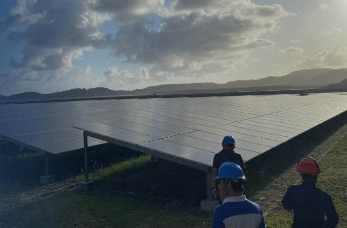

Key points
- Renewable energy (RE) power capacity grew by 1,836 MW in 2025, above the 1,677 MW annual plan in the 2025–2034 Electricity Supply Business Plan (RUPTL) of the state utility PT PLN (Persero). However, the surplus came from industry-owned captive plants, not from RUPTL delivery. RE additions by PLN and other public-supply providers are estimated at only 838 MW, half of the plan.
- Solar PV and hydropower make up 91% of the 2025 RE plan but both fell short. Hydropower reached 71% of plan and solar PV only about 23% excluding the capacity of captive plants.
- Fossil fuel power plants (fossil plants) were planned to grow by 3,552 MW, twice the RE plan, and actually grew by 5,014 MW (41% above plan). Additions by PLN and other public-supply providers were close to plan (97%); the remaining 1,568 MW or so came from captive fossil plants, including coal-fired plants outside the RUPTL, such as in North Maluku.
- Only about 27% of the 2025 net addition to installed capacity came from RE. The RE share of capacity rose from 13.8% to 14.6%, but the gap between fossil and RE capacity widened from 72.9 GW to 76.1 GW.
Demand and the opportunity in new capacity
Indonesia’s electricity demand keeps rising. In 2025, the peak load on the system of the state-owned electricity company PT Perusahaan Listrik Negara (Persero), or PLN, reached 65.1 GW, up from 61.3 GW in 2024 [1]. The 2025–2034 Electricity Supply Business Plan (RUPTL), PLN’s ten-year plan for electricity supply, projects electricity sales to grow by an average of 5.3% per year to 511 TWh in 2034, driven by households, businesses, and smelters and industrial zones [2]. To meet it, the RUPTL plans 69.5 GW of new generation and energy storage over 2025–2034, of which 42.6 GW (61%) is renewable energy (RE) [2].
This capacity expansion is also an opportunity for Indonesia. At the end of 2024, about 86.2% of national generating capacity still came from fossil fuel power plants (fossil plants), with coal-fired power plants alone accounting for 54% [3]. Meanwhile, Indonesia has an estimated RE potential of about 3,660 GW, yet only about 0.4% has been tapped [4]. Every new addition of RE plant can meet two needs at once: adding electricity supply and cutting emissions towards the 2060 net zero emissions target [4].
Renewables: above plan, thanks to captive plants
The PLN system consists of power plants owned by PLN and by independent power producers (IPPs) that sell electricity to PLN. Beyond that, electricity for the public is also supplied by private power utilities (PPUs), which run business areas other than PLN’s, such as industrial estates, while holders of a captive power licence (IUPTLS) build captive plants for their own factories or smelters [1]. The actual additions in this brief cover all plants (PLN, IPPs, PPUs and IUPTLS), whereas the RUPTL plan covers only the PLN system. They are measured as the net addition to installed capacity, i.e. the difference between installed capacity at the end of 2025 and at the end of 2024, after accounting for retired plants.
In 2025, RE capacity grew by 1,836 MW, exceeding the RUPTL annual plan of 1,677 MW [2] by 158.9 MW (Figure 1). However, the surplus came from captive plants, not from RUPTL delivery. RE additions by IUPTLS holders are estimated at about 998 MW, mainly from bioenergy plants and solar PV, while the RE additions by PLN, IPPs and PPUs were only about 838 MW, or half of the plan. Bioenergy grew by 555 MW against a plan of only 14.8 MW. Almost all of this addition was captive, where IUPTLS holders own 98% of national biomass capacity [1].
Solar PV and hydropower (including mini- and micro-hydro) make up 91% of the 2025 RE plan but both fell short. Hydropower reached 71% of plan and solar PV only about 23% excluding the capacity of captive plants. Their additions were also concentrated. West Java province accounted for 45% of national solar PV additions, while Jambi accounted for 92% of hydropower additions and exceeded its provincial plan by 145 MW.
Figure 1. RUPTL plan and actual 2025 capacity additions by plant owner (estimate)
Net additions to installed capacity, MW. Bars show actual additions; the black tick marks the RUPTL plan.
Hover over, tap or tab to a row to see its split by owner.
Even so, some RE projects that matched the 2025 plan, in both timing and capacity, are documented. The first is the Merangin hydropower plant (350 MW) in Jambi, the main contributor to the province’s hydropower additions [5]. The second is the Lumut Balai geothermal power plant Unit 2 (55 MW) in South Sumatra, which obtained its Certificate of Operational Worthiness in June 2025 [6].
Fossil: planned bigger, delivered bigger still
Unlike RE, fossil plants were planned to grow more from the outset. Their 2025 plan of 3,552 MW was more than twice the RE plan. Over the first five years of the RUPTL (2025–2029), planned fossil additions of about 12.7 GW are also slightly larger than RE additions of about 12.2 GW [2]. Actual 2025 additions reached 5,014 MW and exceeded the plan by about 41%. Additions by PLN, IPPs and PPUs are estimated at 3,446 MW (97% of plan), while about 1,568 MW came from captive fossil plants, mainly coal-fired (726 MW), diesel (642 MW) and gas turbine (191 MW) plants.
Presidential Regulation No. 112 of 2022 bans the development of new coal-fired power plants, except (a) those already listed in the RUPTL before the regulation was issued and (b) those integrated with natural-resource processing industries or National Strategic Projects [7]. The first exception is visible in projects that were scheduled to start operating in 2025, such as the Jawa 9 and 10 coal-fired plants (2 × 1,000 MW) in Banten, which began commercial operation in March and May 2025 [8], and the Sumsel-1 mine-mouth coal-fired plant in South Sumatra [9].
The second exception is most visible in North Maluku province. The RUPTL planned only 6 MW of new coal-fired capacity in the province in 2025, yet coal-fired capacity grew by 1,033 MW. Most of this came from captive coal-fired plants in nickel industrial estates, including new units at Weda Bay and Obi Island of 380 MW each that started operating in 2025 [10], [11]. Coal-fired capacity also grew in provinces with no coal-fired addition planned for 2025: North Kalimantan (293 MW), Riau (212 MW), Southeast Sulawesi (90 MW), East Kalimantan (64 MW), West Sulawesi (50 MW), West Kalimantan (25 MW) and North Sumatra (19 MW). These may be projects from earlier plans that only began operating, projects completed ahead of schedule, or captive plants.
So, why are fossil fuels still growing faster?
The larger fossil addition in 2025 is not simply a deviation from the plan, it results mainly from three factors. First, planning. The RUPTL front-loads fossil additions, including gas-fired plants intended to keep supply reliable [2]. Second, legacy commitments. The 2025–2034 RUPTL cut planned non-mine-mouth coal-fired capacity from 10.5 GW to 2.6 GW compared with the 2021–2030 RUPTL [2], but coal-fired plants already listed before Perpres 112/2022 went ahead and began operating in 2025. Third, capacity built outside the RUPTL. Captive fossil plants serving industry keep growing without being covered by PLN’s planning.
As a result, only about 27% of the 2025 net addition to installed capacity came from RE. The RE share of capacity did rise by 0.8 percentage points because RE’s share of the additions (27%) was higher than its share of existing capacity (13.8%), but the gap between fossil and RE capacity widened by about 3.2 GW. As long as fossil additions outpace RE, the energy transition in Indonesia’s power sector will be held back. Even if the 2025–2029 RUPTL is fully delivered, RE would make up only about half of PLN’s additions (12.2 GW versus 12.7 GW of fossil). And, with captive fossil plants outside the RUPTL, RE’s share of national additions is likely to stay below 50%. The year 2026 will be the first test, where for the first time, the RE plan (2.1 GW) is larger than the fossil plan (1.6 GW) [2]. Points to watch going forward:
- Read RUPTL delivery by technology and by province. An RE total above plan can mask delays in many provinces.
- Separate plants inside and outside the RUPTL. Captive plants, both fossil and RE, need to be tracked separately so that PLN’s plan delivery is not misread and captive fossil growth stays visible.
- Publish an annual capacity balance. The Ministry of Energy and Mineral Resources (ESDM) could report a capacity balance by owner (PLN, IPPs, PPUs and IUPTLS) and by technology: opening capacity + new additions − retirements ± reclassification = closing capacity, so that plan delivery no longer has to be estimated.
- Accelerate RE. To fully deliver the RE plan in the 2025–2029 RUPTL, RE additions by PLN, IPPs and PPUs need to average about 2.8 GW per year over 2026–2029, more than three times their 2025 additions [2].
Cite this brief
Sumarto, M. P. (2026). Indonesia’s 2025 power generation report card: Renewables are growing, but fossil fuels are growing faster (Energy Insight Brief 01). Atlas & Fritz. https://atlas-fritz.github.io/energy-insight-brief-01/
References
- [1]Ministry of Energy and Mineral Resources (ESDM). (2026). Handbook of Energy & Economic Statistics of Indonesia 2025. Center for Data and Information Technology, ESDM. esdm.go.id
- [2]PT PLN (Persero). (2025). Rencana Usaha Penyediaan Tenaga Listrik PT PLN (Persero) 2025–2034 [Electricity Supply Business Plan of PT PLN (Persero) 2025–2034]. Ratified by Minister of ESDM Decree No. 188.K/TL.03/MEM.L/2025.
- [3]Ministry of Energy and Mineral Resources (ESDM). (2025). Handbook of Energy & Economic Statistics of Indonesia 2024. Center for Data and Information Technology, ESDM.
- [4]Ministry of Energy and Mineral Resources (ESDM). (2025). Rencana Umum Ketenagalistrikan Nasional (RUKN) Tahun 2024 sampai dengan Tahun 2060 [National Electricity General Plan 2024–2060].
- [5]PT Kerinci Merangin Hidro. (n.d.). Profil perusahaan [Company profile]. ptkmh.com/profile
- [6]Pertamina Geothermal Energy. (2025). Lumut Balai geothermal power plant unit 2 is fully operational: PGE increases installed capacity by 55 MW towards its 1 GW target [Press release]. pge.pertamina.com
- [7]Republic of Indonesia. (2022). Peraturan Presiden Nomor 112 Tahun 2022 tentang Percepatan Pengembangan Energi Terbarukan untuk Penyediaan Tenaga Listrik [Presidential Regulation No. 112 of 2022 on Accelerating Renewable Energy Development for Electricity Supply]. peraturan.bpk.go.id
- [8]IPOT News. (2025). Proyek PLTU Jawa 9 dan 10 rampung, portofolio bisnis BRPT kian kokoh [Jawa 9 and 10 coal power project completed, strengthening BRPT’s business portfolio]. indopremier.com
- [9]Palpres Disway. (2025). 2 unit PLTU MT Sumsel-1 resmi operasi, bukti PLN perkuat keandalan listrik Bumi Sriwijaya [Two units of the Sumsel-1 mine-mouth coal plant officially in operation, strengthening PLN’s supply reliability in South Sumatra]. palpres.disway.id
- [10]Global Energy Monitor. (n.d.). Weda Bay power station. GEM.wiki. gem.wiki
- [11]Global Energy Monitor. (n.d.). PT Halmahera Persada Lygend Nickel Smelter power station. GEM.wiki. gem.wiki